방송통신산업기사 (2004-03-07 기출문제)
1과목: 디지털 전자회로
1. 전파정류회로의 최대효율은 약 몇[%]인가?
- 20
- 40
- 81
- 92
(정답률: 알수없음)

2. 다음과 같은 논리 다이아그램을 논리식으로 표시하면?
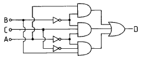
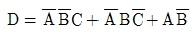
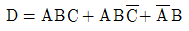
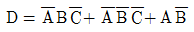
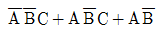
(정답률: 알수없음)
3. 반송파전압 ec = Eccos(wct +θ)를 신호전압 es = Escoswst 로 진폭변조시 피변조파의 상측파대의 진폭은? (단, ma: 변조도)
- wc+ws
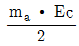
- wc-ws
- ma∙Ec
(정답률: 알수없음)
4. 다음은 반가산기(Half Adder)의 블록도이다. 출력단자 S(sum) 및 C(carry)에 나타나는 논리식은?
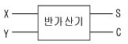
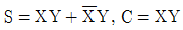
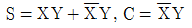
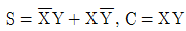
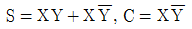
(정답률: 알수없음)
5. 다음 회로의 논리 출력식으로 옳은 것은?
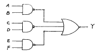
- Y=AB∙CD∙EF
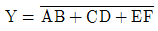
- Y=AB+CD+EF
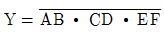
(정답률: 알수없음)
6. 동조형 공진결합 증폭기에서 대역폭 B를 넓게 하는 방법은?
- 공진회로의 용량을 증가시킨다.
- 공진회로의 Q를 낮게 한다.
- 공진회로의 저항을 감소시킨다.
- 공진회로의 인덕턴스를 증가시킨다.
(정답률: 알수없음)
7. 다음 논리식 중 틀린 것은?
- A + 0 = A
- A∙0 = 0
- A∙1 = 1
- A + 1 = 1
(정답률: 알수없음)
8. 다음 논리식을 간단히 하면?
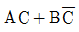
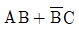
- AC + B
- AB + C
(정답률: 알수없음)
9. 다음과 같은 회로에 정현파 입력 신호를 가했을 때 출력파형은? (단, 다이오우드 순방향 저항 Rf = 0)
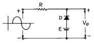
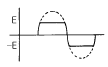
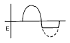
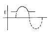
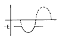
(정답률: 알수없음)
10. 2진 비교기의 구성요소를 맞게 설명한 것은?
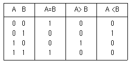
- 인버터 2개, NOR 게이트 2개, NAND 게이트 1개
- 인버터 2개, AND 게이트 1개, NOR 게이트 2개
- 인버터 2개, AND 게이트 2개, X-NOR 게이트 1개
- 인버터 2개, NAND 게이트 2개, X-OR 게이트 1개
(정답률: 알수없음)
11. 다음 연산증폭회로에서 출력전압 e0 를 구하는 식은? (단, R1 = R3, R2 = R4 이다.)
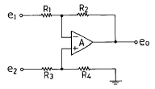
- e0=e2-e1
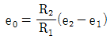
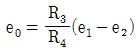
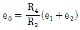
(정답률: 알수없음)
12. Flip-Flop 과 관계가 없는 것은?
- RAM
- Decoder
- Counter
- Register
(정답률: 알수없음)
13. 가청주파수 증폭기에서 부궤환 회로를 사용하는 목적을 설명한 것 중 적합하지 않은 것은?
- 왜곡(distortion)을 개선하기 위하여
- 잡음을 감소시키기 위하여
- 이득을 크게 하기 위하여
- 주파수특성을 좋게 하기 위하여
(정답률: 알수없음)
14. 10진수 25를 2진수로 옳게 나타낸 것은?
- 10001
- 11001
- 10101
- 11000
(정답률: 알수없음)
15. 하틀레이 발진기에서 궤환요소는?
- 용량
- 저항
- 코일
- 능동소자
(정답률: 알수없음)
16. 트랜지스터의 콜렉터 누설전류가 주위온도의 변화로 15[㎂]에서 150[㎂]로 증가되었을 때 콜렉터 전류는 9[㎃]에서 9.5[㎃]로 변하였다. 이 트랜지스터의 안정계수 S는 약 얼마인가?
- 0.037
- 3.7
- 27
- 270
(정답률: 알수없음)
17. 다알링톤(Darlington)회로의 설명으로 틀리는 것은?
- 전압 이득이 작다.
- 전류 이득이 크다.
- 입력저항이 작다.
- 출력저항이 작다.
(정답률: 알수없음)
18. 다음 회로중 미분 회로는 어느 것인가?
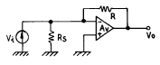
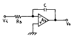
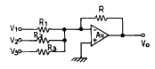
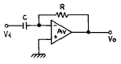
(정답률: 알수없음)
19. 트랜지스터를 증폭작용에 이용할 경우의 동작상태는?
- 포화상태
- 활성상태
- 차단상태
- 역활성상태
(정답률: 알수없음)
20. 다음 중 Schmitt trigger 회로의 특성으로 옳은 것은?
- 이득을 향상시킬 수 있다.
- 계단파 발진기로 주로 사용한다.
- 삼각파 입력으로 정현파 출력이 된다.
- 회로구성은 쌍안정 멀티바이브레이터와 유사하다.
(정답률: 알수없음)
2과목: 방송통신 기기
21. 이리듐, 글로벌스타와 같은 저궤도위성의 지구상 고도 범위는 대략 얼마인가?
- 200[Km] ∼ 1,500[Km]
- 1,500[Km] ∼ 3,000[Km]
- 3,000[Km] ∼ 5,000[Km]
- 5,000[Km] ∼ 10,000[Km]
(정답률: 알수없음)
22. NTSC방식에서 1초당 수평주사하는 주파수는 얼마인가?
- 3.58㎒
- 4.5㎒
- 6㎒
- 15,750㎐
(정답률: 알수없음)
23. 외국어 학습자와 청각장애인들을 위해 텔레비젼 화면에 자막을 내보내는 부가방송과 가장 관계 깊은 것은?
- Teletext
- Teletex
- Closed Caption
- Intercasting
(정답률: 알수없음)
24. 최근 송수신기의 발진방식으로 널리 채택되고 있으며 외부로부터 입력되는 신호의 위상을 추적하여 안정된 위상관계를 유지하는 신호를 얻는 발진방식은?
- 이상형 발진기(Phase Shift Oscillation)
- 수정발진기(Crystal Oscillator)
- LC 발진기(LC Oscillator)
- PLL(Phase Locked Loop)
(정답률: 알수없음)
25. 자기변화형 마이크가 아닌 것은?
- 전자형
- 리본형
- 콘덴서형
- 다이나믹형
(정답률: 알수없음)
26. TV 신호의 측정 방법의 분류가 아닌 것은?
- 진폭과 시간 측정
- 수직 귀선 측정
- 선형 디스토션
- 노이즈 측정
(정답률: 알수없음)
27. 텔리비젼방송을 행하는 방송국의 무선설비중 송신공중선의 전파의 편파면은?
- 수평편파
- 수직편파
- 타원편파
- 원형편파
(정답률: 알수없음)
28. 디지털 위성수신기에 사용되는 방식은 유럽의 DVB 방식으로서 디지털변조는 QPSK 변조방식을 사용한다. QPSK 방식의 이론적 대역폭은 다음중 어느것인가?
- 1 [b/s/Hz]
- 2 [b/s/Hz]
- 3 [b/s/Hz]
- 4 [b/s/Hz]
(정답률: 알수없음)
29. CATV의 기본구성요소가 아닌 것은?
- 서비스 분배전송로
- 교환장치
- 가입자 단말장치
- 헤드엔드
(정답률: 알수없음)
30. 영상 제작 설비와 관련이 없는 것은?
- Camera
- Switcher
- VDA
- ADA
(정답률: 알수없음)
31. 운행설비의 기능이 아닌 것은?
- 긴급뉴스 송출 기능
- 사고복구 기능
- 멀티트랙 녹음기능
- 프로그램 감시 기능
(정답률: 알수없음)
32. 다음중 전송손실에 해당되지 않는 것은?
- 지연왜곡
- 열잡음
- 심볼간 간섭현상
- 압축왜곡
(정답률: 알수없음)
33. 다음중 FM 신호의 검파(복조)방식이 아닌 것은?
- 경사형 검파기(Slope detector)
- 위상고정루프(PLL:phase-locked loop) 검파기
- 비 검파기(Ratio detector)
- 포락선검파기(Envelope detector)
(정답률: 알수없음)
34. 위성통신의 다원접속방식이 아닌 것은?
- FDMA
- VSB
- CDMA
- TDMA
(정답률: 알수없음)
35. 오실로스코프를 이용하여 피변조파를 측정한 결과 다음과 같은 변조 포락선이 나타났을 때 변조도는 얼마인가?
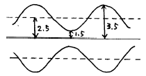
- 16[%]
- 25[%]
- 40[%]
- 80[%]
(정답률: 알수없음)
36. 유선 CATV에 비해 무선 CATV의 장점이 아닌 것은?
- 망 구축의 신속성
- 경제성 우수
- 강우 영향이 적음
- 확장성이 우수
(정답률: 알수없음)
37. 차세대 위성기술의 발전 동향으로 적합하지 않은 것은?
- 이용주파수의 고주파수화
- 지구국의 대형화
- 위성의 대용량화
- 위성신호의 디지털화
(정답률: 알수없음)
38. Color Bar의 Phase를 측정하기에 가장 적합한 측정기는?
- Osciloscope
- Spectrum Analyzer
- Envelope Monitor
- Vector Scope
(정답률: 알수없음)
39. 다음 그림은 TV의 수신신호처리 과정 중에서 일부를 나타낸 것이다. 어느 부분에 해당하는가?
- 튜너
- 영상 및 음성 검파회로
- CRT 구동회로
- 동기회로
(정답률: 알수없음)
40. 다음은 FM 방송의 주파수 편이에 대한 설명이다. 관계가 깊은 것은?
- 피변조 신호의 진폭이 반송파 원래 진폭보다 얼마만큼 변화했는가를 말한다.
- 피변조 신호의 위상이 반송파 원래 위상보다 몇도 변화했는가를 말한다.
- 피변조 신호 주파수가 반송파 주파수에서 얼마만큼 벗어나 있는가를 말한다.
- 피변조 신호의 극성이 반송파의 극성보다 얼마만큼 어긋나 있는가를 말한다.
(정답률: 알수없음)
3과목: 방송미디어 개론
41. 해상도를 크게 개선함은 물론 1125주사선에 9대 16의 종횡비로 크게 확대하여 보다 많은 양의 정보를 전달할 수 있다는 점에서 새로운 차세대 영상시스템이라 일컫는 것은?
- CATV
- HDTV
- 팩시밀리방송
- 테이타방송
(정답률: 알수없음)
42. 컴퓨터 통신망 구축시 정보 발생지(source)와 정보 수신지(destination)를 구성하는 방식이 아닌 것은?
- 점대점(point-to-point) 방식
- 펄스부호변조(Pulse Code Modulation) 방식
- 멀티캐스트(multicast) 방식
- 다중점(multipoint) 방식
(정답률: 알수없음)
43. 다음 중 주문형 영상 (VOD) 서비스 범주에 속하지 않는 것은?
- Movie on demand
- games
- distance learning
- HDTV (고화질 TV)
(정답률: 알수없음)
44. 1980년 중반부터 육상기지국 대신 사용하는 편리한 장비는?
- News Gathering by Satellite
- News Gathering by Station
- News Gathering by Skywave
- News Gathering by Sight-frequency
(정답률: 알수없음)
45. 케이블 TV 방송 시스템의 가입자 단자(TO)의 반사파는 얼마를 기준으로 하는가?
- -124[dB]
- -104[dB]
- -74[dB]
- -24[dB]
(정답률: 알수없음)
46. 터미널에서 나오는 디지탈 신호를 전송회선에 적합한 아날로그 신호로 바꾸어 주는 장치는?
- 회선선별기
- 인터페이스
- 변환기(CODEC)
- 모뎀(MODEM)
(정답률: 알수없음)
47. 다음 영상 미디어 가운데 전자파를 이용하지 않아도 되는 것은?
- TV
- FM 방송
- 극장영화
- 무선 Internet
(정답률: 알수없음)
48. 음성방송방식 중에서 반송파성분과 음성신호의 크기를 변조하여 상하의 양측파대를 전송하는 방식은?
- DSB - AM 방식
- SSB - AM 방식
- 모노포닉(Monophonic) 변조방식
- 2채널 스테레오방식
(정답률: 알수없음)
49. 방송시간에만 보고 들을 수 있었던 텔레비전이나 라디오와는 달리 인터넷은 시간적인 제약없이 원하는 정보를 원하는 시간에 송수신 할 수 있는 특성이 있다. 다음 중 이를 가장 잘 표현한 인터넷의 특성은?
- 상호작용성
- 탈대중성
- 비동시성
- 연결성
(정답률: 알수없음)
50. 영상신호압축 표준인 MPEG video 알고리즘의 요소기술이 아닌 것은?
- 움직임 보상
- 변환부호화
- 벡터양자화
- 허프만 코딩
(정답률: 알수없음)
51. 방송전파를 만들기 위한 방송신호의 흐름순서는?
- 안테나 → 변조 → 입력신호 처리
- 변조 → 안테나 → 입력신호처리
- 입력신호 처리 → 안테나 → 변조
- 입력신호 처리 → 변조 → 안테나
(정답률: 알수없음)
52. 동축케이블에 대한 광섬유 전송매체의 특징 설명으로 거리가 먼 것은?
- 전송매체의 잠재적 대역폭이 크므로 데이터 전송율이 높다.
- 보다 작은 크기와 무게로 많은 양의 데이터를 전송할수 있다.
- 외부적 전자기장에 영향을 받지 않으며 에너지의 발산이 없어 간섭현상을 유발하지 않는다.
- 물리적 특성으로 인해 수 km 마다 리피터가 필요하다.
(정답률: 알수없음)
53. 다음 중 케이블 TV방송의 구성 요소가 아닌 것은?
- 방송 사업자 (S/O)
- 안테나 설비자 (A/P)
- 프로그램 공급자 (P/P)
- 전송망 설비자 (N/O)
(정답률: 알수없음)
54. 다음 중 성격이 다른 매체는?
- 문자
- 영상
- 음향
- 애니메이션
(정답률: 알수없음)
55. TV 방송전파를 이용하여 TV 방송과 함께 동시에 2개 외국어로 정보를 전송할 수 있는 뉴미디어는?
- 문자다중
- 음성다중
- 인터케스트 방송
- DARC
(정답률: 알수없음)
56. B-ISDN에서 여러 가지 특성을 지닌 정보를 효율적으로 다루고 전송속도를 자유롭게 설정하여 전송할 수 있는 방식은?
- STM(동기전송모드)방식
- TDM(시분할다중)방식
- FDM(주파수분할다중)방식
- ATM(비동기전송모드)방식
(정답률: 알수없음)
57. 문자방송은 TV 방송전파 중 다음의 어느 것을 이용하여 문자를 전송하는가?
- 수직귀선소거기간
- 수평귀선소거기간
- 순차주사기간
- 비월주사기간
(정답률: 알수없음)
58. 다음 중 컬러TV 방송방식이 아닌 것은?
- PAL
- VSB
- NTSC
- SECAM
(정답률: 알수없음)
59. 아날로그 TV 방송채널 3번은 주파수 대역이 60~66[MHz]이다. 이때 영상케리어의 주파수는 몇 MHz인가?
- 60.5
- 61.25
- 64.83
- 65.75
(정답률: 알수없음)
60. 영상카메라의 촬상관은 진공관 형태이다. 이 중 집적회로로 이루어진 촬상관은?
- 플럼비콘
- CCD
- 세티콘
- 아이코너 스코프
(정답률: 알수없음)
4과목: 전자계산기 일반 및 방송설비기준
61. 매년 전파 이용의 촉진과 전파 관련 새로운 기술의 개발 및 방송기기 산업의 발전을 위하여 전파진흥기본계획을 누가 수립하여야 하는가?
- 국무총리
- 정보통신부장관
- 전파방송관리국장
- 한국전파진흥협회장
(정답률: 알수없음)
62. 다음 중 가장 저급 수준의 프로그램 언어는?
- Assembly 어
- FORTRAN
- COBOL
- C
(정답률: 알수없음)
63. 다음의 오퍼랜드 어드레스 방식 중에서 기억장치를 두번 읽어야 원하는 데이터를 얻을 수 있는 방식?
- 간접 어드레스 지정방식(indirect addressing mode)
- 직접 어드레스 지정방식(direct addressing mode)
- 상대 어드레스 지정방식(relative addressing mode)
- 페이지 어드레스 방식(page addressing mode)
(정답률: 알수없음)
64. 470MHz초과 960MHz이하의 주파수 대역을 사용하고 영상 첨두포락선전력이 1[W] 이하인 무선설비의 주파수 허용편차는?
- 10Hz
- 500Hz
- 1kHz
- 10kHz
(정답률: 알수없음)
65. 2진수 1001의 1의 보수에 해당하는 것은?
- 0001
- 0110
- 0111
- 0101
(정답률: 알수없음)
66. 방송국 허가를 신청하기에 앞서 먼저 방송국 추천을 받아야 하는데 추천을 받는 기관은?
- 정보통신부
- 산업자원부
- 방송위원회
- 문화관광부
(정답률: 알수없음)
67. 전파의 질을 평가하는 기준에 해당되지 않는 것은?
- 주파수 허용편차
- 공중선전력의 허용편차
- 점유주파수대폭의 허용치
- 스프리어스 발사강도의 허용치
(정답률: 알수없음)
68. 다음 중 Unary 연산이 아닌 것은?
- move
- logical shift
- complement
- NAND
(정답률: 알수없음)
69. 다음 중 어느 것에서 직접 연산이 수행되는가?
- 누산기
- 레지스터
- 감산기
- 가산기
(정답률: 알수없음)
70. 정보통신공사업법에서 방송국설비공사에 해당되지 않는 공사의 설비는?
- 영상ㆍ음향설비
- 송출설비
- 방송관리시스템 설비
- 광통신 전송선로설비
(정답률: 알수없음)
71. 다음 중 중파 방송을 하는 민간 방송이 아닌 것은?
- 기독교방송(CBS)
- 문화방송(MBC)
- 서울방송(SBS)
- 교통방송(TBS)
(정답률: 알수없음)
72. 서브루틴의 호출에 이용되는 자료구조는?
- 배열(array)
- 스택(stack)
- 레코드(record)
- 큐(queue)
(정답률: 알수없음)
73. 대통령령이 정하는 “ 특수관계자” 가 소유하는 주식을 종합편성 또는 보도에 관한 전문편성을 행하는 방송사업자의 주식의 소유제한에 속하지 아니하는 것은?
- 국가 또는 지방자치단체의 기관의 장이 소유하는 경우
- 국가· 지방자치단체가 방송사업자의 주식 또는 지분을 소유하는 경우
- 특별법에 의하여 설립된 법인이 방송사업자의 주식 또는 지분을 소유하는 경우
- 종교의 선교를 목적으로 하는 방송사업자에 출자하는 경우
(정답률: 알수없음)
74. 영상신호용 증폭기의 과도특성이 나쁘면 입력파형에 대하여 출력파형이 규정값보다 넘어 화면 오른쪽 가장자리에 백색선이 발생하는 현상은?
- 오버슈트(Overshoot)
- 오버지터(Over Jitter)
- 과변조(Over Modulation)
- 과부하(Over loading)
(정답률: 알수없음)
75. 사용자(end user)가 작성한 프로그램을 무엇이라 하는가?
- 원시 프로그램(source program)
- 컴파일러(compiler)
- 언어 번역 프로그램(language translator)
- 목적 프로그램(object program)
(정답률: 알수없음)
76. 64비트 마이크로프로세서에서 데이터 버스(data bus)는 몇 개의 선으로 구성되어 있는가?
- 8개
- 16개
- 64개
- 128개
(정답률: 알수없음)
77. 디지털 컴퓨터에 대한 설명이 아닌 것은?
- 모든 데이터들을 이산적인 숫자 형태로 표현된다.
- 사칙 연산 및 논리연산을 수행한다.
- 모든 동작은 프로그램에 의하여 수행된다.
- 회로는 미분, 적분, 가산회로 및 릴레이로 구성된다.
(정답률: 알수없음)
78. TV 영상신호를 TV 방송전파로 발사할 때는 다음 중 어느 방식을 일반적으로 채택하고 있는가?
- 양측파대 방식
- 잔류측파대 방식
- 단측파대 저감반송파 방식
- 단측파대 억압반송파 방식
(정답률: 알수없음)
79. 방송위원회가 종합 유선방송사업을 하고자 하는 자를 추천하고자 할 때 의결 절차와 관계없는 자는?
- 대통령
- 특별시장
- 광역시장
- 도지사
(정답률: 알수없음)
80. 마이크로 컴퓨터에서 각 구성 요소간의 데이터 전송에 사용되는 공통의 전송로는?
- BUS
- CHANNEL
- LINE
- INTERFACE
(정답률: 알수없음)